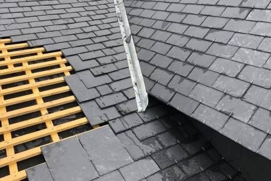

CJ Habitat est une entreprise spécialisée dans la charpente, la couverture et la zinguerie , offrant des services de haute qualité pour répondre aux besoins de ses clients. Basé sur une expertise solide, notre équipe compétente propose des solutions durables et respectueuses de l'environnement. Que ce soit pour la construction, la rénovation ou l'entretien, CJ Habitat s'engage à fournir un travail précis et fiable, assurant la satisfaction de nos clients et contribuant à la stabilité de leurs projets.
Devis et déplacements gratuits !
CJ Habitat excelle dans une variété de prestations dédiées à la préservation, à l'amélioration et à la création de toitures. Notre équipe qualifiée propose des services de réparation tous types confondus, assurant la durabilité et la solidité de votre toit. Nous nous spécialisons également dans le démoussage de toiture, appliquant des traitements efficaces pour préserver l'intégrité de votre structure.
La rénovation de toiture est une de nos expertises, où nous mettons en œuvre des solutions modernes pour revitaliser et renforcer votre toit. Le remplacement de velux, fenêtres de toit, fait partie de nos compétences.
Chez CJ Habitat, nous pouvons également réalisé vos attentes en matière de zinguerie. Que ce soit la création de gouttières et de fenêtre de toit ou d'autres éléments notre équipe assure une performance méticuleuse et esthétique.
Enfin, la création de toiture est l'une de nos spécialités, où nous combinons expertises et techniques pour donner vie à des toitures de bonne qualités et durable. Faites confiance à CJ Habitat pour tous vos besoins en matière de toiture, où qualité, professionnalisme et satisfaction client sont notre engagement principal.

Couverture
Nous réalisons tous types de travaux de couverture. À travers nos prestations, vous bénéficiez d'une couverture avec des matériaux de qualités pour vous assurer une bonne toiture.
Charpente
Nous prenons en charge tous les travaux de charpente. Nous réalisons tous, de la conception à la pose sur maison neuve en passant par la rénovation de votre charpente.
Zinguerie
Pour assurer l'imperméabilité optimale de votre toit, nous procédons, entre autre à l'installation de gouttières et de chéneaux. Cela permet d'évacuer efficacement les eaux de pluie susceptibles de causer des dommages à vos murs et à votre couverture.
Fenêtres de toit
Nous sommes également en mesure de répondre à vos demandes de projets liés à la création de fenêtres de toit. Nos modèles sur mesure seront soigneusement conçus pour s'adapter parfaitement à vos attentes, apportant ainsi luminosité et clarté à votre domicile. CJ HABITAT s'engage à fournir des services optimaux, assurant une pose précise, une conception idéale et le respect de votre environnement pour un confort de vie optimal.
Rénovation
Nous sommes dédiés à l'entretien complet de vos surfaces, offrant des services variés tels que le démoussage professionnel de toiture et de façade, le nettoyage hydrofuge, le traitement anti-mousse, ainsi que des solutions de mise en peinture pour une protection durable.